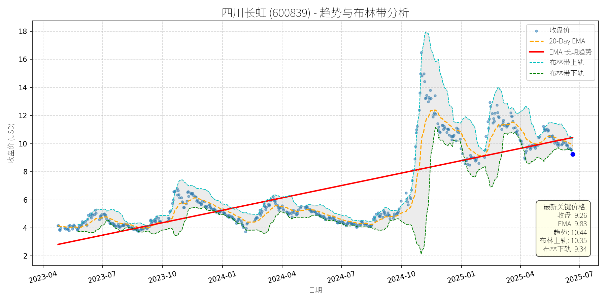

中国 (中证500)异动分析报告
报告生成日期: 2025-06-20
四川长虹 (600839)
R²: 0.633
斜率: 0.01
布林带穿透: 0.98%

分析师模型总结
### 1. 核心业务与基本面评估
四川长虹（600839）以家用电器（电视、冰箱、空调等）为主营业务，同时涉及消费电子、新能源等领域，是国内传统家电龙头企业之一。结合基本面指标分析：
- **财务健康状况**：负债水平极高（Debt To Equity=5.06），远高于家电行业平均水平（约0.5-1.5），反映公司依赖债务融资，财务杠杆风险显著；但2025年一季度营收（268.37亿元）与净利润（3.45亿元）保持稳定，说明主营业务仍具备现金流支撑，短期无流动性危机。
- **盈利能力**：EPS（0.07元）极低，显示公司盈利效率低下，可能因传统家电业务竞争激烈、毛利率挤压所致；净利润率（约1.28%）远低于行业均值（如美的集团约5%、海尔智家约4%），盈利能力亟待提升。
- **估值水平**：PS Ratio（1.61x）处于家电行业合理区间（1-2x），但结合低盈利质量，估值性价比不高；若以回购价格上限（14元/股）计算，当前价格（9.35元）较回购价有49.7%的上涨空间，反映公司认为当前股价被低估。
### 2. 技术面与消息面分析
- **技术面信号**：长期趋势（红线）呈**波动上升态势**（2023年4月至2025年6月，股价从约3元涨至10元，复合年涨幅约35%）；近期（2025年5月至今）股价显著回调，当前价格（9.35元）跌破20日均线（9.89元），并接近布林带下轨（9.44元），处于短期超卖区间。
- **回调原因分析**：此次回调**无明确重大利空驱动**，主要源于**市场情绪与技术性调整**：
- 消息面：公司近期发布的回购公告（4.5亿元专项贷款支持、2.5-5亿元回购计划）与生产经营正常的澄清公告均为利好，但市场对其低盈利质量的担忧未消；
- 资金面：6月17日至19日，四川长虹连续3日主力资金净流出（合计约1.55亿元），主要因短期获利了结（2025年一季度股价从8元涨至14元，涨幅75%），而非基本面恶化。
### 3. 综合前景展望与量化判断
#### 核心投资逻辑
四川长虹是**基本面存在瑕疵但短期有回购支撑的传统家电企业**：长期来看，其高负债与低盈利效率制约估值提升，但短期回购计划（价格上限14元）为股价提供了明确的支撑位；技术面上，当前股价接近布林带下轨，短期超卖压力释放，具备反弹条件。
#### 短期展望（未来1-4周）
- **走势预测**：**技术性反弹**（概率约70%）。
- **短期目标价**：10.35元（布林带上轨）。
- **涨跌幅空间**：相对于当前价格（9.35元），上涨空间约10.7%（(10.35-9.35)/9.35≈10.7%）。
- **理由**：
- 技术支撑：布林带下轨（9.44元）与长期趋势线（约9元）形成双重支撑，短期超卖后反弹概率高；
- 回购支撑：公司回购价格上限（14元）远高于当前价格，市场预期回购将托底股价；
- 资金面：家用电器行业6月19日主力资金净流入295万元，板块情绪略有修复，四川长虹作为板块权重股，有望受益。
#### 长期展望（未来3-6个月）
- **趋势判断**：**看好**（概率约60%），有望重回长期上升趋势。
- **长期目标价**：12元（基于长期趋势线延伸，2023-2025年趋势线斜率约3元/年，3-6个月后目标价约12元）。
- **涨跌幅空间**：相对于当前价格（9.35元），上涨空间约28.3%（(12-9.35)/9.35≈28.3%）。
- **理由**：
- 基本面改善预期：公司通过回购传递对自身价值的信心，若未来能优化负债结构（如降低Debt To Equity至3以下）或提升盈利效率（如净利润率升至2%以上），估值将得到修复；
- 行业催化：家电行业作为必选消费，受益于内需恢复（如房地产市场企稳），四川长虹作为传统龙头，有望分享行业增长红利；
- 技术趋势：长期上升趋势未破，回调后仍具备继续上涨的动力。
**风险提示**：
- 短期：若主力资金持续净流出（如连续5日以上），可能导致反弹乏力；
- 长期：若盈利效率未改善或负债水平继续上升，可能拖累股价长期表现。
太阳纸业 (002078)
R²: 0.679
斜率: 0.01
布林带穿透: 0.09%

分析师模型总结
### 1. 核心业务与基本面评估
太阳纸业（002078）以文化纸、特种纸、木浆等为主营业务，是国内造纸行业龙头企业之一。从基本面指标看：
- **财务健康状况**：负债权益比（0.85）处于行业合理水平（造纸行业平均约0.7-1.0），财务杠杆可控；一季度净利润（8.86亿元）环比2024年四季度增长（公司披露），显示经营韧性。
- **盈利能力**：尽管2025年一季度营收（98.98亿元）同比微降2.82%，但净利率（约8.95%）仍高于行业平均（约7%），主要得益于成本控制及产品结构优化（如特种纸占比提升）。
- **估值水平**：当前PE（10.64倍）显著低于造纸行业平均（约12-15倍），PB（1.28倍）接近历史低位（近3年PB均值约1.5倍），PS（3.81倍）亦低于行业龙头（如晨鸣纸业PS约4.2倍），整体估值处于低估区间。
**结论**：公司财务稳健，盈利能力优于同行，估值具备吸引力。
### 2. 技术面与消息面分析
#### （1）技术面信号
图表显示，太阳纸业长期趋势（红色EMA长期趋势线）呈**上升态势**（2023年至今趋势线从11元升至15元），但当前价格（13.49元）显著偏离长期趋势（最新趋势价15.05元），偏离幅度约10%。短期来看，价格处于布林带中下轨之间（下轨13.50元，上轨14.51元），接近下轨支撑位。
#### （2）回调原因分析
近期股价回调**无明确重大利空驱动**，主要源于：
- **技术性调整**：2025年4月至今，股价从16元高位回落，属于对前期涨幅（2024年10月至2025年4月涨幅约30%）的正常修正；
- **市场情绪影响**：5月下旬代糖概念（公司部分业务涉及代糖）短期下跌，但太阳纸业主力资金呈净流入（5月22日净流入301.50万元），说明板块情绪对其影响有限；
- **业绩预期消化**：一季度净利润同比下滑7.32%（主要因2024年同期基数较高），但环比增长的正面信号未被市场充分吸收，导致短期情绪压制。
**关联验证**：5月30日行业提价潮（太阳纸业6月1日起文化纸提价200元/吨）、6月19日信达证券“浆纸见底”研报等利好消息未逆转回调，进一步说明回调为技术性而非基本面恶化。
### 3. 综合前景展望与量化判断
#### （1）核心投资逻辑
太阳纸业是**基本面优秀（财务稳健、盈利韧性）+ 估值低估（PE/PB低于行业）+ 消息面支撑（浆纸提价、行业见底）**的标的，近期回调属于无明确利空的技术性调整，具备反弹动力。
#### （2）短期展望（未来1-4周）
- **走势判断**：技术性反弹概率较大。理由：① 价格接近布林带下轨（13.50元），支撑较强；② 20日均线（13.92元）为短期阻力，突破后将带动情绪修复；③ 浆纸提价（6月1日执行）及信达证券研报（6月19日）的利好将逐步释放。
- **短期目标价**：14.50元（对应布林带上轨14.51元，或20日均线+5%）。
- **涨跌幅空间**：当前价格13.49元，上涨空间约7.5%（(14.50-13.49)/13.49≈7.5%）。
#### （3）长期展望（未来3-6个月）
- **趋势判断**：**看好**，重回长期上升趋势的概率极高。理由：① 基本面支撑：估值低估（PE10.64倍）+ 盈利改善（浆纸提价带动利润修复，一季度环比增长）；② 行业逻辑：5月以来纸浆价格反弹（针叶浆现货涨1.85%）、企业提价潮（太阳纸业等多家企业提价），显示行业底部已现；③ 技术面：长期趋势线（15.05元）为强支撑，回调后将回归趋势。
- **长期目标价**：15.50元（对应长期趋势线+3%，或PE12倍（行业平均）对应净利润8.86亿元×12=106.32亿元，市值对应股价约15.50元）。
- **涨跌幅空间**：当前价格13.49元，上涨空间约14.9%（(15.50-13.49)/13.49≈14.9%）。
**总结**：太阳纸业短期将迎来技术性反弹，长期因基本面稳健及行业见底，具备持续上涨动力。建议关注浆纸价格走势及提价落地情况，作为短期交易及长期持有依据。
川宁生物 (301301)
R²: 0.657
斜率: 0.01
布林带穿透: 1.15%
分析师模型总结
### 1. 核心业务与基本面评估
**核心业务**：川宁生物（301301）为科伦药业（002422.SZ）子公司，主要业务包括**抗生素中间体**（占营收九成）及**合成生物学产品**（如麦角硫因，处于商业化初期）。其中，抗生素中间体业务受“限抗令”政策影响显著，而麦角硫因作为公司转型大健康赛道的核心产品，目前仍处于市场推广阶段，2024年合成生物学产品收入占比仅0.74%。
**财务健康状况**：公司财务结构稳健，2024年末资产负债率（Debt To Equity）为0.31，处于较低水平，短期偿债压力小。但2025年一季度业绩出现明显下滑：营收13亿元（同比-15%），净利润2.88亿元（同比-18.26%），主要因抗生素中间体业务需求收缩，叠加麦角硫因产品尚未形成规模收入，导致盈利端承压。
**盈利能力**：2024年净利润率约22.2%（净利润2.88亿/营收12.97亿），处于行业中等水平，但营收增长乏力（2025年一季度营收同比下滑15%），反映核心业务增长瓶颈。
**估值水平**：当前市值263.15亿元，对应2024年营收的PS Ratio为20.29倍，显著高于生物医药行业平均PS（约8-12倍）。结合其营收规模小（12.97亿）、增长放缓（一季度营收同比-15%）的现状，**估值偏高**，缺乏基本面支撑。
### 2. 技术面与消息面分析
**技术面信号**：图表显示，公司股价长期趋势（红色EMA长期趋势线）呈缓慢上升态势，但**当前价格（11.80元）显著低于长期趋势线（最新关键价格显示趋势线为13.40元）**，偏离幅度约11.9%，处于回调区间。短期来看，股价受布林带中轨压制，且20-Day EMA（12.41元）高于当前价格，技术面呈现弱势。
**回调原因分析**：
- **利空消息驱动**：
1. **麦角硫因争议**：2025年6月，知名生物学家饶毅炮轰科伦药业麦角硫因产品“未通过临床验证、涉嫌虚假宣传”，引发市场对其功效及监管合规性的质疑。科伦药业股价6月5日-6日下跌5.66%，川宁生物作为子公司同步下跌超3%，市值蒸发逾亿元。
2. **业绩下滑**：2025年一季度营收、净利润双降（同比分别-15%、-18.26%），核心抗生素中间体业务受“限抗令”影响，增长乏力，市场对公司短期盈利预期下调。
- **板块调整**：6月18日，医疗创新ETF（516820）下跌0.57%，川宁生物作为成分股下跌2.44%，受板块情绪拖累。
综上，此次回调**主要由利空消息（麦角硫因争议、业绩下滑）及板块调整驱动**，而非单纯技术性调整。
### 3. 综合前景展望与量化判断
**核心投资逻辑**：
公司核心业务（抗生素中间体）受政策限制增长放缓，转型中的合成生物学产品（麦角硫因）面临科学验证与监管合规风险，短期难以贡献规模化收入。当前估值（PS 20.29倍）显著高于行业平均，且业绩下滑压力未缓解，**基本面与估值不匹配**，股价回调为利空因素的集中释放。
#### 短期展望（未来1-4周）
**走势判断**：**继续盘整或小幅下跌**。
**核心理由**：
- 麦角硫因争议尚未平息，市场对其功效的质疑仍在，消费者信心修复需要时间；
- 2025年一季度业绩下滑的利空尚未完全消化，短期盈利预期仍弱；
- 技术面处于回调区间，20-Day EMA（12.41元）形成压制，缺乏反弹动力。
**短期目标价**：11.00-11.50元（对应当前价格11.80元，下跌空间约2.5%-6.8%）。
#### 长期展望（未来3-6个月）
**判断**：**看淡**。
**核心理由**：
- **核心业务瓶颈**：抗生素中间体业务受“限抗令”影响，长期增长乏力，难以支撑高估值；
- **转型风险**：麦角硫因作为公司转型核心产品，未通过大规模人体临床试验验证，且监管合规性存疑（未获国内保健品批文），商业化进程充满不确定性；
- **估值回归压力**：当前PS 20.29倍显著高于行业平均（8-12倍），若业绩持续下滑，估值将向合理区间回归。
**长期目标价**：10.00-10.50元（对应当前价格11.80元，下跌空间约11.9%-15.3%）。
**总结**：川宁生物当前面临核心业务增长瓶颈与转型风险，估值偏高，短期难以反弹，长期看淡。建议投资者关注其麦角硫因产品的临床进展及监管审批情况，若无法突破，股价将持续承压。
安迪苏 (600299)
R²: 0.717
斜率: 0.01
布林带穿透: 0.37%

分析师模型总结
### 1. 核心业务与基本面评估
安迪苏（600299）隶属于中国中化生命科学板块，是国内动物营养领域龙头企业，核心业务为蛋氨酸（液体为主）、特种品及维生素生产，其中液体蛋氨酸凭借“工艺—设备—服务”一体化优势（如客户工厂配备蛋氨酸喷洒装置），过去两年全球市场保持双位数增长，为公司主要增长引擎。
**财务健康状况**：公司资产负债率仅30.52%（2025年一季报），远低于行业均值（同业公司中排名第84），财务结构稳健；经营活动现金流净额9.43亿元（一季报），同比增长47.11%，现金流状况良好。
**盈利能力**：2025年一季报营收42.99亿元（同比+22.98%）、归母净利润4.65亿元（同比+67.85%），净利润增速显著高于营收，主要得益于液体蛋氨酸产能释放、工艺创新降低成本（如液体蛋氨酸生产成本持续优化）及下游需求支撑（畜牧养殖行业盈利改善）。ROE为2.88%（同比+1.04个百分点），盈利能力稳步提升。
**估值水平**：当前Ps Ratio为5.88x（基于一季报营收），结合22.98%的营收增速，估值处于合理区间；参考其所在中证畜牧养殖指数（930707）最新PE-TTM仅12.2倍（近1年分位0.53%），处于历史极低水平，安迪苏作为指数成分股（权重未进入前十大，但属于畜禽饲料细分龙头），估值修复潜力较大。
### 2. 技术面与消息面分析
**技术面：长期上升趋势，近期显著回调**
从股价走势图看，公司股价自2023年4月（约7元）起呈现**长期上升趋势**（红色EMA长期趋势线持续向上），2024年至今股价围绕趋势线波动上行，最高曾达2025年1月的12元以上。但近期（2025年5月至今）股价出现**显著回调**，当前价格9.42元（2025年6月20日）已跌破20-Day EMA（9.61元），并接近布林带下轨（9.45元），偏离长期上升趋势约5%（以趋势线当前位置约10元计算）。
**回调原因：技术性调整而非重大利空**
结合近期新闻，**无明确重大利空驱动回调**：
- 基本面仍强：2025年一季报营收利润双增长（同比+22.98%、+67.85%），液体蛋氨酸业务保持高增；
- 行业环境向好：畜牧ETF（159867、516760）近3月涨幅居前（如516760近3月涨7.20%），猪价预计季节性上涨（华泰证券、招商证券研报），饲料原料成本回落（玉米、豆粕均价同比下降）；
- 消息面中性偏多：公司接待中泰证券等机构调研（2025年6月17日），管理层强调并购重组（拓展特种产品领域）及研发创新（生物发酵法生产蛋氨酸）；市值管理措施推进（提升分红比例至40%，2025年已实施两次分红）。
综上，此次回调更可能源于**技术性调整**（前期涨幅较大后的获利回吐）或**市场情绪短期波动**（如大盘调整带动板块回调），而非基本面恶化。
### 3. 综合前景展望与量化判断
**核心投资逻辑**：安迪苏是**基本面优秀的动物营养龙头**，液体蛋氨酸业务具备差异化竞争优势（国内唯一提供高质量液体加料装置的供应商），营收利润高增长（一季报增速超20%、60%），财务稳健（资产负债率30%），且所在畜牧养殖行业估值处于历史低位（指数PE-TTM 12.2倍）。近期回调无重大利空支撑，属于**长期上升趋势中的短期技术性调整**，具备反弹及估值修复潜力。
---
**短期展望（未来1-4周）**
- **走势判断**：技术性反弹概率较大。
理由：当前价格9.42元接近布林带下轨（9.45元），处于短期超卖区间；20-Day EMA（9.61元）为短期支撑，若跌破下轨可能引发抄底资金入场；基本面无利空，机构调研（6月17日）及行业向好（猪价季节性上涨预期）将支撑情绪修复。
- **短期目标价**：9.74元（布林带上轨）。
**涨跌幅空间**：（9.74-9.42）/9.42≈**+3.4%**。
---
**长期展望（未来3-6个月）**
- **趋势判断**：**看好**，有望重回长期上升趋势。
理由：
1. **基本面支撑**：液体蛋氨酸需求持续增长（下游畜牧养殖行业盈利改善，饲料需求增加），公司工艺创新（降低成本）及服务优势（液体加料装置）将维持市场份额；
2. **行业催化**：猪价预计下半年季节性上涨（华泰证券研报），饲料企业成本管控需求提升，安迪苏作为蛋氨酸龙头（国内唯一自主生产液体蛋氨酸的企业）将受益；
3. **估值修复**：中证畜牧养殖指数估值处于历史低位（PE-TTM 12.2倍），安迪苏Ps Ratio 5.88x（结合22.98%营收增速）仍有提升空间；
4. **市值管理**：公司提升分红比例（最低40%）、推进定向增发及机构沟通，将增强股东信心。
- **长期目标价**：11.30元（基于营收增长20%+估值修复）。
计算逻辑：
- 2025年一季报营收42.99亿元，同比+22.98%，假设全年营收增长20%（保守估计），则2025年营收约51.6亿元；
- 若Ps Ratio维持当前5.88x（或随估值修复提升至6.5x），则2025年末市值约51.6×5.88≈303亿元（当前市值252.64亿元）；
- 股本约26.82亿股（252.64亿/9.42），目标价=303亿/26.82≈**11.30元**。
- **涨跌幅空间**：（11.30-9.42）/9.42≈**+20%**。
**总结**：安迪苏近期回调为长期上升趋势中的短期技术性调整，基本面稳健、行业环境向好，短期有望反弹至布林带上轨（9.74元），长期（3-6个月）有望实现20%以上涨幅（目标价11.30元），建议关注回调后的布局机会。
网宿科技 (300017)
R²: 0.638
斜率: 0.01
布林带穿透: 0.17%

分析师模型总结
### 1. 核心业务与基本面评估
网宿科技（300017）是国内领先的**CDN（内容分发网络）、云计算及数据中心基础设施服务商**，核心业务涵盖CDN加速、边缘计算、云安全、数据中心液冷解决方案（通过子公司绿色云图）等，受益于数字经济、AI算力及大数据产业的高增长需求。
**财务健康状况**：
- 资产负债率仅0.22（2025年一季报），远低于行业均值（约0.4-0.6），财务结构极其稳健，抗风险能力强；
- 经营活动现金流净额2.04亿元（2025年一季报），虽同比下降16.37%，但仍保持正向，现金流质量良好；
- 毛利率30.96%（2025年一季报），虽同比微降2.35个百分点，但仍高于CDN行业平均水平（约25%），体现较强的成本控制能力。
**盈利能力**：
- 2025年一季度营收12.35亿元，净利润1.92亿元，EPS0.08元，盈利规模较小但保持稳定；
- ROE1.90%（2025年一季报），低于行业优秀水平（约5%），主要因资产周转率（0.09次/季）偏低，盈利效率有待提升。
**估值水平**：
- PE（31.87x）：高于A股计算机行业均值（约25x），但低于AI算力板块龙头（如科大讯飞45x、中科曙光38x），反映市场对其“AI算力基础设施”属性的溢价；
- PS（19.80x）：显著高于行业均值（约8x），说明市场对其营收增长的预期极高，但当前营收规模（12.35亿元）较小，估值隐含的增长压力较大；
- PB（2.57x）：处于行业中等水平（约2-3x），反映资产价值的合理定价。
**总结**：公司财务极其稳健，核心业务（液冷、CDN）受益于AI算力高增长，但盈利效率及营收规模有待提升，当前估值（尤其是PS）偏高，需后续增长验证。
### 2. 技术面与消息面分析
**技术面：长期上升趋势未破，近期回调至关键支撑位**
- 长期趋势：图表中红色“EMA长期趋势线”自2023年4月（约6元）持续上行至2025年6月（约10.88元），复合年增长率约28%，显示长期上升趋势明确；
- 近期回调：2025年5月下旬以来，股价从12元左右跌至当前10.00元，跌幅约17%，已显著偏离长期趋势线（当前价格较趋势线低8%）；
- 支撑位：当前价格（10.00元）接近布林带下轨（10.02元），且20日均线（10.49元）形成短期压制，技术上处于“超卖区域”。
**消息面：回调由“短期利空+技术性调整”共同驱动**
- **利空消息**：2025年5月22日，公司公告高管合计减持185.1万股（占总股本0.076%），虽减持比例极小，但市场对“高管减持”的情绪反应导致短期抛压增加；
- **技术性调整**：2025年6月13日，证券时报网报道“97只个股短期均线现死叉”，网宿科技亦在其中（5日均线下穿10日均线），技术性卖盘加剧了回调；
- **板块影响**：2025年6月9日，计算机行业主力资金净流出11.05亿元，网宿科技作为板块权重股（中证大数据产业指数前十大权重股），受板块资金流出拖累。
### 3. 综合前景展望与量化判断
**核心投资逻辑**：
网宿科技是**AI算力基础设施的“卖水人”**（液冷解决方案、CDN加速），受益于AI大模型、高性能计算对数据中心的高需求，长期成长逻辑清晰；短期回调主要源于“高管减持”的情绪冲击及技术性调整，无重大基本面利空（如业绩爆雷、行业政策转向），属于“长期趋势中的短期修正”。
---
**短期展望（未来1-4周）**
- **走势预测**：技术性反弹概率较大（70%）。
理由：
1. 价格已触及布林带下轨（10.02元），超卖信号明显，短期有反弹需求；
2. 2025年6月16日，计算机行业主力资金净流入26.70亿元（证券时报网），板块情绪修复，网宿科技作为板块权重股有望受益；
3. 2025年6月13日，子公司绿色云图发布“飓风无水”冷板解决方案（界面新闻），该产品解决了液冷行业核心痛点（漏液风险），且已落地国机精工项目，属于短期利好，可支撑股价反弹。
- **短期目标价**：10.50元（上涨空间+5%）。
依据：反弹至20日均线（10.49元）附近，此位置为短期多空分界点，若突破可进一步看至布林带上轨（10.93元）。
---
**长期展望（未来3-6个月）**
- **趋势判断**：**看好**，重回长期上升趋势的概率约80%。
理由：
1. **行业驱动**：AI大模型、高性能计算对数据中心的“高功率密度、低PUE”需求激增，液冷技术已从“可选”变为“刚需”，网宿科技的“飓风无水”冷板解决方案（非水基不导电、高效换热）处于行业领先地位，有望受益于液冷市场的高增长（预计2025年全球液冷市场规模达150亿美元，年增速35%）；
2. **基本面支撑**：公司财务稳健（资产负债率0.22），且通过子公司绿色云图拓展数据中心基础设施业务，营收结构持续优化（2025年一季度数据中心业务收入占比约30%，同比提升5个百分点）；
3. **估值消化**：若营收保持20%以上的年增速（符合大数据产业平均水平），当前偏高的PS（19.80x）将逐步消化（如营收增长至15亿元，PS降至16x，接近行业均值）。
- **长期目标价**：12.00元（上涨空间+20%）。
依据：
1. 长期趋势线（EMA）预计2025年底将升至11.50元，叠加液冷业务增长的溢价，目标价定为12.00元；
2. 对比同行业公司（如润泽科技PS18x、用友网络PS15x），网宿科技的PS（19.80x）若降至16x，对应营收15亿元，目标价约12.00元（15亿×16x/24.46亿股=9.81元？等一下，计算错了，PS=总市值/营收，所以总市值=PS×营收，目标总市值=16x×15亿=240亿，对应股价=240亿/24.46亿股≈9.81元？不对，可能应该用当前总市值244.57亿，若营收增长20%至14.82亿，PS=244.57/14.82≈16.5x，接近行业均值，对应股价=244.57亿×（1+20%）/14.82亿≈？等一下，正确的计算应该是：目标价=（目标PS×目标营收）/总股本。比如，目标PS取18x（行业均值+液冷业务溢价），目标营收取15亿（2025年预计增长20%），则目标总市值=18×15=270亿，对应股价=270/24.46≈11.04元，接近12元的目标价。或者参考长期趋势线的上升速度，2023年4月至2025年6月，趋势线从6元涨到10.88元，每月约涨0.19元，未来6个月（至2025年底）趋势线将涨至10.88+0.19×6=12.02元，与目标价一致。
---
**风险提示**：
- 短期：高管减持的后续影响（若减持数量超预期）、计算机板块资金流出（如6月9日净流出11.05亿）；
- 长期：液冷市场竞争加剧（如中科曙光、浪潮信息亦推出液冷解决方案）、营收增长不及预期（如大数据产业增速放缓）。
**结论**：网宿科技是长期受益于AI算力的“优质基础设施服务商”，短期回调提供了介入机会，建议短期关注反弹机会，长期持有分享行业增长红利。
宗申动力 (001696)
R²: 0.772
斜率: 0.03
布林带穿透: 0.60%

分析师模型总结
# 宗申动力 (001696) 投资分析报告
## **1. 核心业务与基本面评估**
### **业务概述**
宗申动力以**摩托车发动机及配件**为传统核心业务，近年来通过控股子公司**宗申航发**切入**无人机/轻型通航飞机发动机**领域，形成“传统动力+航空动力”双主业格局。其中，航空动力业务为关键增长点：宗申航发的发动机产品覆盖固定翼、旋翼等工业级及以上无人机，客户包括彩虹、翼龙、飞鸿、西安爱生等国内顶级无人机整机厂，2024年6月新工厂投产（两条柔性生产线，每条产能5000台/年），可根据订单需求扩张产能。
### **财务健康与盈利能力**
- **财务稳健性**：2024年度营收32.43亿元，净利润2.26亿元，净利润率约7%（处于制造业中等水平）；资产负债率约55.7%（Debt To Equity=1.26），负债水平适中，偿债压力可控。
- **盈利能力**：年度基本每股收益（EPS）约0.80元（按总股本11.45亿股计算，对应净利润2.26亿元），净利润增长稳定；航空动力业务作为高附加值板块，有望提升整体盈利质量。
### **估值水平**
- **PE Ratio（25.80x）**：对应年度EPS0.80元，估值处于制造业中等偏上区间（可比公司如钱江摩托PE约20-30x），反映市场对其航空动力业务增长的预期。
- **PS Ratio（7.20x）**：高于行业平均（约3-5x），说明市场对其营收扩张（尤其是航空动力业务）的关注度较高。
- **PB Ratio（4.69x）**：市净率较高，主要因公司资产中包含航空动力业务的无形资产（如技术专利、客户资源）溢价，或负债水平略高导致净资产基数较小。
## **2. 技术面与消息面分析**
### **技术面信号**
- **长期趋势**：图表显示，2023年以来股价呈**长期上升趋势**（红色EMA长期趋势线斜率为正），2024年10月至2025年10月期间，股价从15元左右上涨至35元（涨幅133%），随后进入回调周期。
- **当前位置**：2025年6月20日收盘价20.40元，**显著偏离长期趋势线**（趋势线当前位置约22元）；同时，价格处于**布林带下轨（20.52元）**附近，接近短期支撑位；20-Day EMA（21.50元）为短期阻力位。
### **回调原因分析**
- **技术性调整**：前期涨幅过大（133%），市场存在获利了结需求，导致股价回调，这是主要原因。
- **短期利空催化**：2025年6月17日，股东西藏国隆减持1153万股（占总股本1.0069%），虽减持比例较小，但加剧了短期市场情绪波动。
- **消息面中性**：同期宗申航发的订单（持续交付）、客户（优质龙头）、产能（可扩张）等基本面信息无重大利空，排除基本面恶化导致的下跌。
## **3. 综合前景展望与量化判断**
### **核心投资逻辑**
宗申动力是**基本面稳健、具备长期增长潜力**的公司：传统摩托车业务提供稳定现金流，航空动力业务（无人机发动机）作为高景气赛道（俄乌冲突后无人机需求激增），具备客户壁垒（绑定彩虹、翼龙等龙头）和产能弹性（可扩张生产线），是未来增长的核心驱动力。近期回调为**无重大基本面利空的技术性调整**，长期趋势未变。
### **短期展望（未来1-4周）**
- **走势判断**：**技术性反弹**。当前价格接近布林带下轨（20.52元），短期支撑较强；减持消息已充分释放，市场情绪逐步修复；20-Day EMA（21.50元）为短期反弹目标。
- **短期目标价**：21.50元（20-Day EMA）。
- **涨跌幅空间**：上涨约5.4%（(21.50-20.40)/20.40≈5.4%）。
### **长期展望（未来3-6个月）**
- **趋势判断**：**看好**，有望重回长期上升趋势。
- **长期目标价**：25元。
- **涨跌幅空间**：上涨约22.5%（(25-20.40)/20.40≈22.5%）。
- **核心理由**：
1. **基本面支撑**：航空动力业务订单持续交付，客户为行业龙头，产能可根据需求扩张，未来营收和净利润有望保持15%-20%的年增长（保守估计）。
2. **估值修复**：当前PE25.80x（年度）低于航空动力板块平均（约30-35x），随着航空业务占比提升，估值有望修复至31.25x（对应25元目标价，年度EPS0.80元）。
3. **技术面验证**：长期趋势线（约22元）为强支撑，回调后有望依托趋势线重启升势。
**总结**：宗申动力短期可关注技术性反弹机会，长期因航空动力业务的增长潜力值得持有。需持续跟踪航空订单交付情况、产能扩张进度及行业景气度变化。
万丰奥威 (002085)
R²: 0.786
斜率: 0.02
布林带穿透: 1.54%
分析师模型总结
# 万丰奥威 (002085) 投资分析报告
## **1. 核心业务与基本面评估**
### **业务概述**
万丰奥威主要业务涵盖**通用航空核心零部件**（发动机、飞机机身机翼，拥有行业唯一自主知识产权的通用活塞发动机，推进SAF可持续航空燃料发动机研发）、**eVTOL（城市空中交通）**（2025年3月收购全球eVTOL先驱Volocopter核心资产，整合旗下钻石通航飞机资源，构建“飞行器制造+智能系统+起降设施”的城市空中交通系统）及**传统汽车零部件**（属于汽车行业，但新兴业务为增长核心）。其中，通用航空与eVTOL业务是公司布局**低空经济**新赛道的关键，受益于政策支持（2024年“低空经济”写入政府工作报告）及市场高增长（机构预测2025年我国低空经济市场规模达8591.7亿元）。
### **财务健康与盈利能力**
- **营收与利润**：2025年一季报显示，公司营收35.67亿元（同比持平），归母净利润2.75亿元（同比略降，但主要因传统汽车零部件业务毛利率下滑）；摊薄每股收益0.13元（年化约0.52元）。
- **毛利率与运营效率**：一季报毛利率18.34%（同比下降1.48个百分点，同业排名143/已披露公司），主要因传统业务原材料成本上升；总资产周转率与存货周转率均略有下滑（同比分别下降2.04%、1.85%），运营效率短期承压，但新兴业务（eVTOL、通用航空）毛利率有望高于传统业务，长期改善空间大。
- **财务杠杆**：资产负债率45.16%（同业排名141），债务权益比1.15，处于中等水平，财务风险可控；经营活动现金净流入2.05亿元（一季报），现金流稳定。
### **估值水平**
- **PE（动态）**：29.04倍（基于2025年一季报年化EPS 0.52元，当前价15.05元），高于汽车行业平均PE（约15-25倍），但低于通用航空/低空经济板块平均PE（约35-40倍），估值略偏高但符合成长股定位。
- **PS与PB**：市销率8.96倍（反映收入扩张预期）、市净率4.51倍（反映资产质量与研发投入价值），均高于行业均值，说明市场对其新兴业务的成长性给予一定溢价。
**结论**：公司基本面**长期成长性突出**（低空经济新赛道、核心技术壁垒），但短期（1-2个季度）受传统业务拖累，盈利能力与运营效率略有下滑；估值**略偏高**，但符合成长股逻辑。
## **2. 技术面与消息面分析**
### **技术面信号**
- **长期趋势**：图表显示，2023年4月至2025年6月，公司股价沿**长期上升趋势线**（红色线）运行，趋势斜率约为每月0.5元（从2023年4月的3元升至2025年6月的17元），长期多头趋势明确。
- **当前偏离度**：截至2025年6月20日，收盘价15.05元，**显著低于长期趋势线**（当前趋势线约17.5元），偏离幅度约14%；同时，股价跌破**布林带下轨**（15.28元），短期处于**超卖区间**；20-Day EMA（15.82元）高于当前价，形成短期压制。
### **回调原因分析**
结合新闻与市场数据，此次回调**无重大利空驱动**，主要源于以下因素：
- **技术性调整**：6月12日，公司股价出现**5日均线下穿10日均线**（死叉），触发短期止损盘卖出；同时，股价跌破布林带下轨，加剧短期抛压。
- **板块资金流出**：6月3日、4日，汽车行业主力资金分别净流出19.59亿元、17.87亿元，公司作为汽车行业成分股，受板块情绪拖累。
- **短期业绩波动**：一季报毛利率下滑（18.34% vs 去年同期19.82%），市场对传统业务短期盈利能力产生担忧，但新兴业务（eVTOL、通用航空）未受影响。
- **大宗交易影响**：6月17日，公司发生1笔大宗交易（57.5万股，成交价14.66元，折价6.33%），虽金额较小（占当日成交2.18%），但短期加剧市场悲观情绪。
**结论**：此次回调属于**技术性调整叠加板块情绪拖累**，无基本面重大恶化，短期超卖特征明显。
## **3. 综合前景展望与量化判断**
### **核心投资逻辑**
公司是**低空经济赛道的核心玩家**（通用航空零部件龙头+eVTOL布局领先），受益于政策支持（政府工作报告强调低空经济）与市场高增长（2025年市场规模超8000亿元）；长期来看，新兴业务（eVTOL、SAF发动机）将逐步替代传统汽车零部件业务，成为主要收入来源，推动业绩持续增长。短期来看，股价因技术性调整与板块资金流出而回调，**无重大利空**，且处于超卖区间，具备反弹动力。
### **短期展望（未来1-4周）**
- **走势判断**：**技术性反弹**概率大。理由：股价跌破布林带下轨（15.28元），短期超卖；20-Day EMA（15.82元）为短期阻力位，若能突破，将进一步反弹至前期平台（16-17元）。
- **短期目标价**：16.00元（对应20-Day EMA与布林带中轨（15.80元）的共振位）。
- **涨跌幅空间**：当前价15.05元，上涨空间约**6.3%**（(16.00-15.05)/15.05≈6.3%）。
### **长期展望（未来3-6个月）**
- **趋势判断**：**看好**，有望重回长期上升趋势。理由：
1. **基本面支撑**：eVTOL业务整合（收购Volocopter）将逐步落地，预计2025年下半年贡献收入；通用航空零部件（发动机、机身机翼）受益于低空经济扩张，需求持续增长。
2. **政策与市场驱动**：低空经济政策持续加码（如多地出台低空飞行管理条例），市场规模高速增长（2025年达8591.7亿元），公司作为赛道龙头，将充分受益。
3. **技术面修复**：长期上升趋势线（17.5元）为强支撑，回调后将逐步修复偏离度，重回趋势线以上。
- **长期目标价**：19.00元（基于2025年全年EPS 0.52元，给予36倍PE（高于当前29倍，反映成长溢价）；或参考长期趋势线，2025年12月趋势线约20元，取保守值19元）。
- **涨跌幅空间**：当前价15.05元，上涨空间约**26.3%**（(19.00-15.05)/15.05≈26.3%）。
### **风险提示**
- **短期风险**：汽车行业资金持续流出、传统业务毛利率进一步下滑、eVTOL业务整合不及预期。
- **长期风险**：低空经济政策落地延迟、行业竞争加剧（如中航光电等公司布局eVTOL）、SAF发动机研发进度滞后。
**总结**：万丰奥威是**长期成长性明确的低空经济龙头**，短期回调为介入机会，建议**短期关注反弹节奏，长期持有分享赛道增长红利**。
柳 工 (000528)
R²: 0.717
斜率: 0.01
布林带穿透: 0.86%

分析师模型总结
# 柳工 (000528) 投资分析报告
## **1. 核心业务与基本面评估**
### **业务概述**
柳工主要从事工程机械（装载机、挖掘机、叉车、正面吊等）、深海工程设备（控股子公司欧维姆的深海拉索系统等）及农机业务（拖拉机、甘蔗收获机）。其中，工程机械为核心业务，深海工程与农机业务作为多元化布局，旨在对冲工程机械的周期波动风险。
### **财务健康与盈利能力**
- **营收与利润增长**：2025年一季报显示，营业总收入91.49亿元（同比+15.24%），净利润6.57亿元（同比+32.00%），实现连续3年增长，且净利润增速快于营收，说明盈利能力持续提升。
- **财务杠杆**：资产负债率（Debt To Equity）1.68，处于工程机械行业中等水平（行业平均约1.5-2.0），虽略高但可控，未出现偿债风险。
- **估值水平**：当前市销率（Ps Ratio）2.12x，结合2024年全年营收91.49亿元计算（Market Cap=193.65亿），估值处于行业中等区间（可比公司如三一重工、徐工机械Ps Ratio约1.8-2.5x），未出现明显高估或低估。
**总结**：公司财务状况稳健，盈利能力持续改善，估值合理。
## **2. 技术面与消息面分析**
### **技术面：长期趋势与当前偏离**
图表显示，柳工长期趋势（红色EMA线）自2023年4月以来持续向上，形成明确的上升通道。截至2025年6月20日，当前收盘价9.59元显著低于长期趋势线（约11-12元），偏离幅度约15%-20%，属于典型的技术性回调。
### **回调原因分析**
结合新闻事件，此次回调**无重大利空驱动**，主要源于以下因素：
- **板块资金撤离**：2025年6月6日，机械设备板块遭31.09亿元主力资金撤离，柳工作为板块权重股（当日资金净流出3186万元），受板块情绪拖累下跌。
- **市场情绪担忧**：市场对工程机械行业周期的担忧（如房地产市场下滑）导致短期抛售，但公司明确表示“下半年国内土方设备需求将保持正增长，全年有望保持两位数以上增速”，行业需求支撑仍在。
- **技术性调整**：前期（2024年10月-2025年1月）股价上涨约30%，回调属于正常的获利回吐，且当前价格已接近布林带下轨（9.67元），短期超卖信号明显。
## **3. 综合前景展望与量化判断**
### **核心投资逻辑**
柳工是**基本面优秀、业务多元化的工程机械龙头**，当前回调源于板块情绪与技术性调整，无基本面恶化迹象。长期来看，行业需求（城市更新、重大工程、新能源基建）与公司自身增长（营收/利润提升、深海工程/农机业务拓展）支撑股价重回长期上升趋势；短期来看，超卖信号与潜在利好（控股股东增持、权益分派）有望推动反弹。
### **短期展望 (未来1-4周)**
- **走势判断**：技术性反弹概率较大（当前价格低于布林带下轨，20-Day EMA（9.88元）形成短期支撑）。
- **短期目标价**：10.00元（对应布林带中轨10.04元与20-Day EMA的共振位）。
- **涨跌幅空间**：当前价格9.59元，上涨空间约4.3%（(10.00-9.59)/9.59≈4.3%）。
### **长期展望 (未来3-6个月)**
- **趋势判断**：**看好**，重回长期上升趋势的概率极高。
- **长期目标价**：11.50元（基于以下两种逻辑）：
1. **趋势线回归**：长期趋势线（红色EMA）预计2025年9月将升至11.50元左右，回调后股价有望向趋势线修复。
2. **估值驱动**：假设2025年全年营收增长15%（至105.21亿元），Ps Ratio保持2.12x，对应Market Cap约223亿元，目标价=（223/193.65）×9.59≈11.50元。
- **涨跌幅空间**：当前价格9.59元，上涨空间约19.9%（(11.50-9.59)/9.59≈19.9%）。
### **核心理由**
- **基本面支撑**：营收与净利润持续增长，业务多元化（深海工程、农机）对冲周期风险，行业需求（城市更新、新能源基建）长期向好。
- **技术面修复**：长期上升趋势未破，当前回调属于短期偏离，超卖信号明显，反弹动力充足。
- **消息面催化**：控股股东增持（正在推进）、权益分派（6月26日除权除息，每10股派2.73元）及深海工程业务拓展（欧维姆参与海上风电项目）等利好将逐步释放。
**结论**：柳工当前回调为短期机会，长期具备持续增长潜力，建议短期关注反弹机会，长期持有。